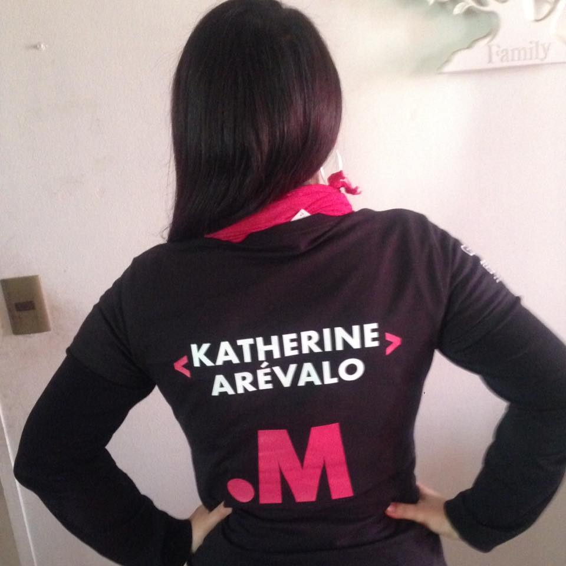

Katherine Arévalo Flores
desarrolladora web
Email : karevalo82@gmail.com
teléfono : +56991544848
Incorporarme a un equipo de trabajo principalmente en el área administrativa de la empresa, en donde pueda aportar mi experiencia y conocimientos adquiridos, crecer en lo profesional y económico, manteniendo un ambiente laboral de respeto y cordialidad.
LUGAR FECHA DESCRIPCION
enel actual ejecutiva call center
AÑO LUGAR DESCRIPCION
2014 Fucap centro formación para el trabajo Curso de Cocina Nacional E Internacional. Practica profesional Hotel W Santiago
2009 - 2010 Centro Formación Técnica Esucomex 1ro y 2do semestre cursados
2004 Centro de formación Ecatema Titulada de Secretaria Administrativa Computacional.
2001 Curso de Computación Liceo Agustín Edwards Mc Clure